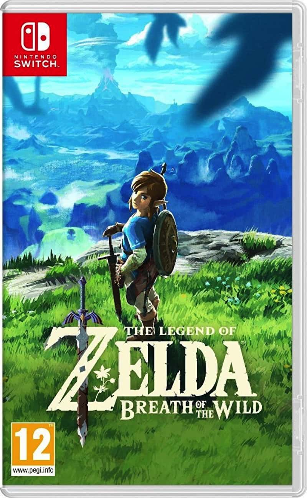
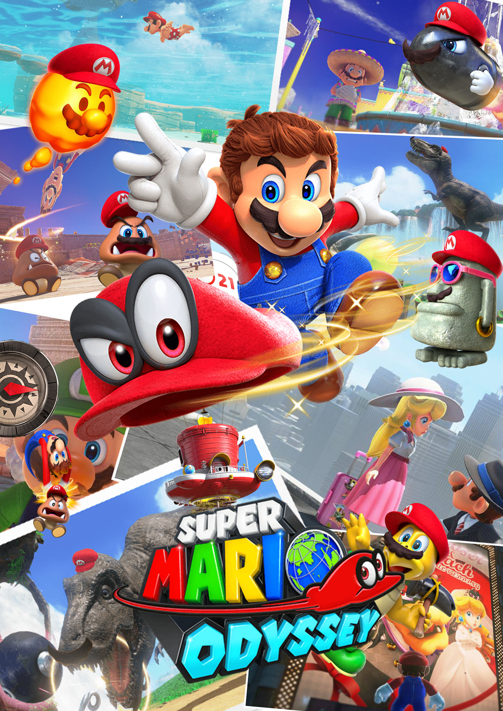

| VIDEOJUEGO |
DESCRIPCIÓN |
 The Legend of Zelda: Tears of the Kingdom The Legend of Zelda: Tears of the Kingdom |
Parecía imposible mejorar lo aparentemente inmejorable. Una secuela de Breath of the Wild que conservaba el mismo mundo abierto dejaba entrever algo poco ambicioso. Pero no es el caso, ni mucho menos. Ese mundo está muy cambiado, y ampliado de una manera poco habitual, sorprendente y estimulante. Esta última es una de las mejores palabras para defenir a The Legend of Zelda: Tears of the Kingdom, pero también sirven ingenioso, profundo, y por supuesto, divertido. Porque lo que ha hecho Nintendo es ofrecer una serie de poderes que amplían hasta el infinito las posibilidades de su predecesor, permitiéndonos resolver los desafíos (los combates, los puzles, la exploración) de muchísimas maneras diferentes si somos inventivos. De los mejores juegos de la historia. |
| The Legend of Zelda: Breath of the Wild |
Llegamos al primer puesto que, cómo no, es para The Legend of Zelda: Breath of the Wild, una de las producciones más innovadoras, soberbias e influyentes que se han publicado jamás. Esta entrega, que también se publicó en Wii U, cuenta con algunas de las ideas más brillantes del mundo del videojuego y las pone en práctica de una manera exquisita, brindándonos un mundo de posibilidades para que jugueteemos con él. Además, se enmarca en un estilo gráfico rompedor tanto para la propia saga como para las tendencias de la industria, dándole más valor a lo que ya de por sí es un videojuego único. |
| Super Mario Odyssey |
Está claro que un buen Mario en tres dimensiones nunca falla y con ese mínimo llegamos al lanzamiento de Super Mario Odyssey, una brillante obra que bien podría optar al puesto de mejor videojuego de Nintendo Switch. Aun con esa presunción de calidad, esta magnífica aventura consiguió sorprendernos con una constante reinvención de sus mecánicas, una apuesta por la exploración libre (y gratificante) de sus hermosos y bien diseñados niveles, y una cantidad abrumadora de contenido. Ya no hablamos sólo de uno de los mejores Mario en 3D que se han publicado, sino de uno de los mejores videojuegos de la historia. |